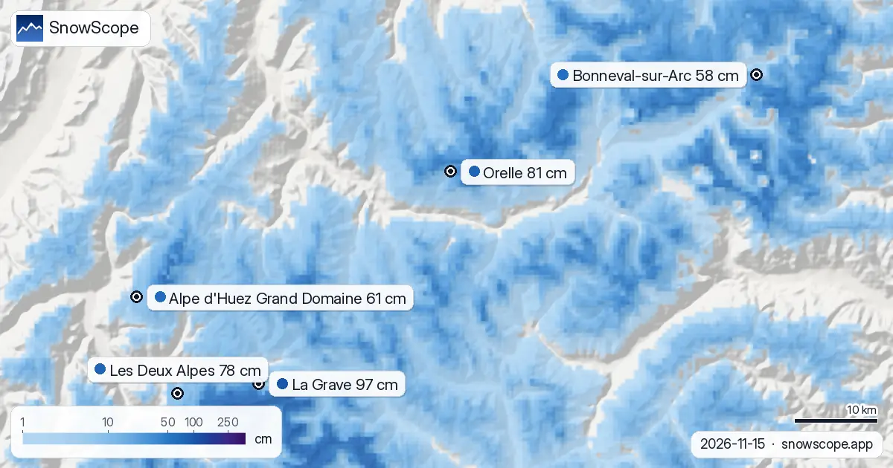

Manteau neigeux dans les Alpes : La Grave garde la couche la plus épaisse, 97 cm (15 novembre)
Aujourd'hui, la neige la plus épaisse dans les Alpes est à La Grave (France), environ 97 cm sur le haut du domaine. Orelle suit avec 81 cm, et Les Deux Alpes a 78 cm. Dans la région, 851 stations sur 1 178 dans les Alpes ont de la neige en altitude aujourd'hui, et notre modèle trouve 63 570 km² de sol blanc. Sur le terrain, nous avons toujours une sonde ; ces chiffres disent où aller, la sonde dit ce qu'il y a sous les skis.
Consultez les prévisions neige en temps réel pour La Grave sur l'application SnowScopeHauteurs de neige, alertes poudreuse et carte 3D, gratuitement.
Ce qu'il y a au sol
Depuis le 13 novembre, la neige est passée de 75 850 km² à 63 570 km² aujourd'hui ; pour le 18 novembre, notre prévision donne 59 240 km².
À La Grave, l'écart entre le haut et le bas est net : 83 cm au sommet (3 543 m), 83 cm à mi-pente (3 369 m) et 76 cm en bas (3 196 m).
| Station | Hauteur de neige | Neige fraîche, 72 h | Attendu, jours suivants | Sommet |
|---|---|---|---|---|
| La Grave | 97 cm | 41 cm | 65 cm | 3 543 m |
| Orelle | 81 cm | 27 cm | 77 cm | 3 221 m |
| Les Deux Alpes | 78 cm | 38 cm | 51 cm | 3 511 m |
| Alpe d'Huez Grand Domaine | 61 cm | 37 cm | 54 cm | 3 306 m |
| Bonneval-sur-Arc | 58 cm | 12 cm | 55 cm | 2 948 m |

À quoi s'attendre ensuite
D'ici le 18 novembre, la prévision apporte 77 cm à Orelle, 65 cm à La Grave et 55 cm à Bonneval-sur-Arc.
Le 16 novembre, l'isotherme 0 °C à La Grave se situe entre 2 610 m et 3 210 m : neige mouillée probable en bas, neige d'hiver en haut.
Les prévisions à quelques jours peuvent changer : regardez à nouveau la carte la veille du départ.
Depuis les stations au sol
Le 13 novembre, la station de mesure Weißseespitze (3 499 m) a relevé 264 cm au sol. À la station de mesure Sonnblick (3 109 m), le capteur indiquait 55 cm de neige au sol le 13 novembre, dont 23 cm tombés en 24 heures. À la station de mesure Gandegg (2 710 m), la neige mesurée au sol était de 41 cm le 13 novembre.
Un mot sur les chiffres : les valeurs des stations de ski sont une estimation de notre modèle pour le haut du domaine, alors que chaque station de mesure mesure un seul point à la date indiquée.
Face aux autres hivers
Départ lent à La Grave : à 3 369 m, notre modèle ne montre que 18 cm, moins que les 70 cm habituels ; un 15 novembre, seuls 7 des 46 hivers passés en avaient moins.
Orelle est en retard à 2 779 m : seulement 19 cm aujourd'hui, sous les 50 cm habituels. Seuls 10 des 46 hivers passés en avaient moins un 15 novembre.
Départ lent à Les Deux Alpes : à 2 397 m, notre modèle ne montre que 7 cm, moins que les 26 cm habituels ; un 15 novembre, seuls 10 des 46 hivers passés en avaient moins.
Conseils aux skieurs
- De la neige sur la carte ne veut pas dire que la station est ouverte : vérifiez remontées et dates d'ouverture sur son site.
- La neige de début de saison est fine. Restez sur les pistes ouvertes et damées : cailloux et herbe se cachent juste dessous.
- Les pentes sud prennent le plus de soleil et fondent d'abord ; les pentes nord en altitude gardent leur neige le plus longtemps.
- Avant le hors-piste ou la randonnée, lisez le bulletin d'avalanche officiel (liens ci-dessous).
- Activez une alerte poudreuse dans l'app SnowScope pour savoir quand La Grave reçoit de la neige fraîche.
À propos de ces chiffres
Les hauteurs de neige des stations sont la neige la plus épaisse sur le haut du domaine, d'après le modèle de neige SnowScope (environ 1 km, calcul du 15 novembre) ; ce sont des estimations pour une zone, pas une mesure en un point. Les valeurs des stations de mesure sont mesurées à la date indiquée. Les prévisions peuvent changer. Consultez toujours le bulletin d'avalanche officiel avant le hors-piste.
Bulletins d'avalanche officiels: Météo-France BERA
Citer ce bulletin
Pour la recherche, l'enseignement ou la presse : chiffres et graphiques réutilisables librement sous CC BY 4.0 avec cette citation.
SnowScope (2026), Manteau neigeux dans les Alpes : La Grave garde la couche la plus épaisse, 97 cm (15 novembre), https://snowscope.app/blog/fr/2026/11/alps-la-grave-snow-depth-today-15-november-2026.html, consulté le 2026-11-15
SnowScope (Atlas Labs). (2026, November 15). Manteau neigeux dans les Alpes : La Grave garde la couche la plus épaisse, 97 cm (15 novembre). SnowScope snow reports. https://snowscope.app/blog/fr/2026/11/alps-la-grave-snow-depth-today-15-november-2026.html
BibTeX
@misc{snowscope2026alpslagravesnowdepthtoda,
author = {{SnowScope (Atlas Labs)}},
title = {Manteau neigeux dans les Alpes : La Grave garde la couche la plus épaisse, 97 cm (15 novembre)},
year = {2026},
month = nov,
howpublished = {\url{https://snowscope.app/blog/fr/2026/11/alps-la-grave-snow-depth-today-15-november-2026.html}},
note = {Published 2026-11-15 20:24 UTC; accessed 2026-11-15}
}· CC BY 4.0 · Méthodes, données et outils →
La Grave : neige et température selon l'altitude, cet hiver vs l'hiver dernier (outils) →
Suivre La Grave
Gratuit : un message quand la neige arrive, et la météo chaque matin.
Autres bulletins neige

Alpe d'Huez vaut-elle le coup en décembre 2026 ? Nous vérifions les probabilités de neige, le prix de départ de 58,00 EUR et comparons avec Les 2 Alpes.

L'Alpe d'Huez fait face au soleil. Comment organiser sa journée selon l'heure et l'altitude, avec la neige de 46 hivers passés, des villages bas au Pic Blanc.

50 cm en haut du domaine : voilà pourquoi La Grave est en tête de notre liste. Nous avons combiné la hauteur de neige du jour, la neige fraîche des …